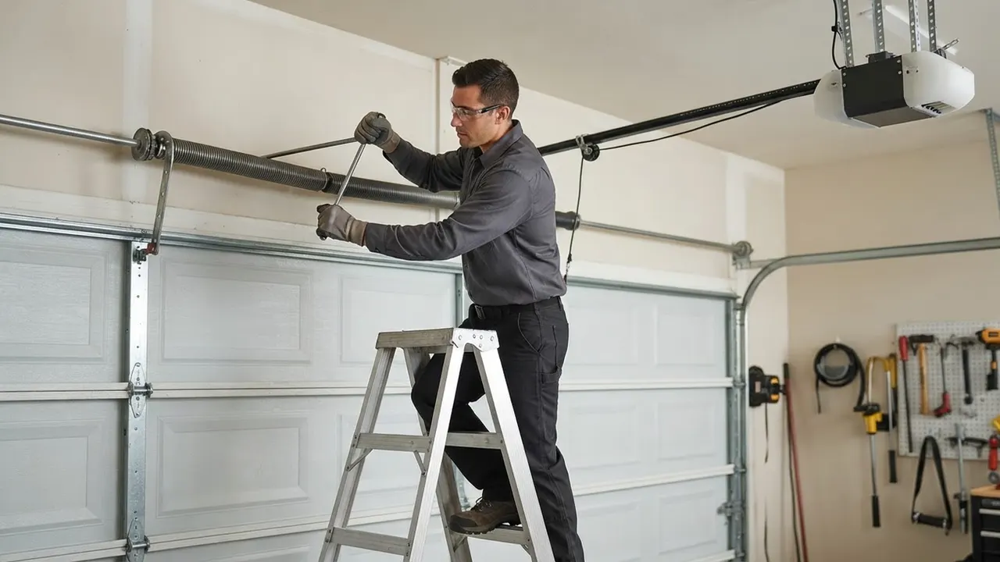

Garage Door Keypad Repair
Garage Door Keypad Repair Wilmington DE Done Right The First Time
When your keypad stops responding, Garage Door Keypad Repair Wilmington DE homeowners trust starts with a real diagnosis, not a guess. We test the keypad, the wiring, and the opener logic board, then repair or replace what actually failed. Whether it is a LiftMaster pad flashing in a Trolley Square carriage house or a Chamberlain unit dead in Hedgeville, we get you back to a working code the same day.
Service overview
Garage Door Keypad Repair Wilmington DE Explained
Garage Door Keypad Repair Wilmington DE is the diagnostic and repair work that restores a wireless or wired entry pad to full function, covering dead buttons, failed batteries, corroded terminals, lost programming, and pads that no longer talk to the opener. We pull the pad, test voltage at the terminals, check the opener's learn button and logic board, and confirm the code transmits on the correct frequency. Most repairs take 45 to 90 minutes on site.
Wilmington pads take a beating. Salt air off the Riverfront, freeze-thaw cycles through January, and summer humidity in unheated garages all chew through keypad contacts and battery trays. When a customer calls about a garage door keypad not working Wilmington DE, nine times out of ten the pad is either unpaired, water-damaged, or the opener's memory has dropped the code. We carry LiftMaster, Chamberlain, Genie, Linear, and Marantec pads on the truck so most jobs finish in one visit.

Practical benefits
Why Homeowners Call Us For Keypad Work
A dead keypad is a lockout waiting to happen. Here is what a proper repair gets you beyond just a working code.
Same-Day Lockout Relief
We run same-day garage door keypad repair Wilmington DE calls six days a week, with emergency slots held for lockouts. If your pad died with the car inside, we prioritize that call. Most Wilmington addresses see a tech within 2 to 4 hours of booking, and we confirm the new code works before we leave the driveway.
All Major Brands Stocked
Our vans carry LiftMaster, Chamberlain, Genie, Craftsman, Linear, Marantec, and Sommer keypads, plus universal pads that pair with older openers. That means a garage door keypad replacement Wilmington DE usually finishes in one trip instead of two. No waiting a week for a special order while you juggle spare remotes.
Code-Correct Wiring
Wired keypads run low-voltage wire back to the opener, and that wire has to be landed correctly per NEC electrical code and the opener manufacturer's spec. We test continuity, replace corroded pigtails, and seal exterior penetrations so water stops finding its way into the pad housing.
Programming You Can Repeat
We do not just hand you a working code and leave. We walk you through garage door keypad programming Wilmington style, step by step, on your specific opener, and write the new PIN on the inside of the opener cover. If you ever need to change it, you will know exactly which buttons to hold.
How service works
What To Expect On Keypad Repair Day
Five steps, start to finish. Most keypad calls close out in under two hours on site.
STEP 01
Phone Diagnosis
We ask three questions: does the pad light up, does the wall button still open the door, and does the remote still work. Those answers tell us whether the problem is the pad, the opener, or the wiring before we roll. You get a rough price range on the call, and a two-hour arrival window.
Tools and methods
Tools And Methods We Use
Digital Multimeter
Tests battery voltage and terminal continuity on wired and wireless keypads. Confirms whether the pad is transmitting and whether the opener's receiver is accepting the signal.
LiftMaster And Chamberlain Keypads
Stocked on every truck for same-day replacement. These are the two most common brands in Wilmington garages, and we carry both wired and wireless models.
Genie, Linear, And Marantec Keypads
Carried for older openers and less common systems. Having them on the truck means most replacements finish in one visit instead of two.
Screwdriver Set And Socket Wrench Set
Used to open the keypad housing, remove the mounting bracket, and access the opener's logic board. Standard tools, but having the right sizes saves time.
Safety Glasses
Worn any time we are working overhead on the opener or the door track. Required by OSHA safety compliance on every job site.
Weather-Rated Silicone Sealant
Reseals the keypad housing and the wire penetration after service. This is what keeps Wilmington salt air and freeze-thaw moisture out of the pad.
UL 325 Safety Verification
Every keypad call ends with a safety sensor test to UL 325 standard. A misaligned sensor can mimic keypad failure, so we confirm the door reverses properly before we call the job done.
DASMA-Compliant Installation
Keypad mounting height, wire routing, and housing sealing follow DASMA guidelines. This is what keeps the pad working through Wilmington's weather instead of failing in a year.
NEC Low-Voltage Wiring Practice
Wired keypads run low-voltage wire back to the opener. We land it per NEC electrical code, test continuity, and replace any corroded pigtails we find.
Manufacturer Programming Sequence
Each brand has its own learn sequence. We follow the manufacturer's spec for LiftMaster, Chamberlain, Genie, Linear, and Marantec so the code pairs cleanly and stays paired.

Where this service fits
When Wilmington Homeowners Call Us
A homeowner in Hedgeville is locked out because the keypad died while they were walking the dog.
We prioritize lockout calls and can usually have a tech on site within 2 hours. We diagnose the pad, replace the battery or the pad itself, and reprogram your code so you are back inside the same afternoon. You get back in the same day, with a working code and a note showing how to change it yourself next time.
A Trolley Square resident is selling their home and the buyer's inspector flagged the keypad as non-functional.
We repair or replace the keypad, reprogram it, and provide a written confirmation of the fix that you can hand to the buyer's agent. We also test the safety sensors so the inspection clears. The inspection item is resolved, and the sale moves forward without a second trip from the inspector.
A Riverfront property manager needs six keypads reprogrammed with unique tenant codes after a turnover.
We come out, reset each keypad, program unique PINs for each unit, and leave a written code sheet for the manager. We can also set up a maintenance schedule so this is handled annually. Every tenant has a working, unique code, and the manager has documentation for the file.
A homeowner in The Highlands has a keypad that works in summer but fails every January.
We replace the battery with a cold-rated cell, clean and tension the contacts, and reseal the housing to keep moisture out. If the pad is over eight years old, we recommend replacement with a weather-rated model. The keypad works reliably through Wilmington winters instead of failing every cold snap.
Local execution
How Keypad Repair Runs In Wilmington
Wilmington garages deal with three things that kill keypads: salt air off the Riverfront, freeze-thaw cycles from December through March, and summer humidity that corrodes contacts in unheated spaces. Pads mounted on the south or west side of a garage take the worst of it. We see more keypad failures in Hedgeville, Southbridge, and along the Riverfront than anywhere else in the city, mostly because those areas get more moisture and salt exposure. When you call for garage door keypad replacement in Wilmington, Delaware, we bring weather-rated pads and seal the housing properly so the new one lasts. If your pad is on a 1920s carriage house in Wawaset Park or a newer build in North Brandywine, the fix is the same: diagnose, repair or replace, reprogram, and seal. We also check the opener's logic board on every call, because a failing board will drop the code again within weeks if it is not addressed.
Hedgeville
Older housing stock with unheated detached garages. Keypads here fail more often from humidity and temperature swings than from battery issues.
Riverfront
Salt air exposure is highest here. Keypad contacts corrode faster, and we recommend weather-rated pads with sealed housings for any replacement.
Trolley Square
Many garages are tight and the keypad is mounted close to the door frame. We check clearance and wire routing carefully to avoid pinching.
North Brandywine
Newer builds with LiftMaster and Chamberlain openers. Most keypad calls here are programming issues rather than hardware failures.
Southbridge
Low-lying areas that see more moisture after storms. We seal keypad housings and wire penetrations thoroughly on every call here.
Freeze-thaw cycles from December through March
Cold shrinks contacts and weakens batteries, which is why keypad failures spike in January and February. We use cold-rated batteries and tension contacts on every winter call.
Salt air along the Riverfront and East Side
Salt accelerates corrosion on keypad terminals and circuit boards. We clean and reseal housings, and recommend weather-rated pads for replacements in these areas.
Summer humidity in unheated garages
Humidity corrodes contacts and can short out the keypad's board. We seal wire penetrations and check for moisture damage on every summer call.
Power surges from Wilmington storms
Surges can wipe the opener's paired-device memory, which makes the keypad look broken. We re-pair the keypad and any remotes, and test the board for surge damage.
Problems we solve
Keypad Problems We Fix Every Week
A keypad that quits is rarely just a keypad problem. Here are the failures we see most in Wilmington and how we handle them.
Keypad lights up but the door will not open
We re-pair the keypad to the opener and test the receiver. If the logic board is dropping codes repeatedly, we replace the board and re-pair the pad. Most of these calls finish in under an hour. The pad is transmitting, but the opener is not accepting the signal. This usually means the code was dropped from the opener's memory or the receiver is failing. Left alone, it becomes a full lockout.
Keypad is completely dead, no lights
We pull the pad, test voltage, and inspect the board for corrosion. If the pad is salvageable, we clean and reseal it. If not, we install a new weather-rated keypad from the truck the same visit. Dead pads usually mean a failed battery, corroded contacts, or water intrusion. In Wilmington, salt air and freeze-thaw cycles accelerate all three. A dead pad means no entry without a remote or wall button.
Keypad works intermittently, especially in cold weather
We replace the battery with a cold-rated cell, clean and tension the contacts, and reseal the housing. If the pad is more than eight years old, we recommend replacement so you are not calling us again next winter. Intermittent failures are the hardest to live with because you never know if the door will open. Cold weather shrinks contacts and weakens batteries, which is why this shows up in January and February.
Keypad code stopped working after a power outage
We re-pair the keypad and any remotes that also dropped, then test the full system. If the opener's board is surge-damaged, we replace it and re-pair everything on the same visit. Some openers lose their paired devices after a surge or extended outage. The keypad is fine, but the opener forgot it. This is a common call after Wilmington storms.


A practical standard for every visit.
Clear planningPrepared arrivalsCareful workLocal follow-through
Experience in the details
16 Years Of Keypad And Opener Work
Delaware Express Garage Door Service has been repairing and installing garage door openers and keypads across New Castle County since 2010. That is 16 years of LiftMaster, Chamberlain, Genie, and Craftsman systems, from 1990s chain drives to current belt-drive units with MyQ. Our techs are trained on UL 325 safety compliance and DASMA standards, and we hold a Delaware contractor license. We have replaced or reprogrammed thousands of keypads in Wilmington alone, and we know which models fail in which neighborhoods.

Where we work
One local team. A lot of ground covered.
Downtown WilmingtonRiverfrontThe HighlandsTrolley SquareForty AcresBaynard VillageWawaset ParkCool SpringTrinity VicinityBrowntownLittle ItalyUnion Park Gardens
Check my address Notes from local customers
What Wilmington Customers Say
Keypad died on a Sunday with both cars inside. Called Monday morning, tech was here by 1 p.m. He tested the pad, found a corroded battery tray, replaced it and reprogrammed the code in about 40 minutes. Price was exactly what he quoted on the phone. No upsell, no drama.
Our LiftMaster keypad had been flaky for months. Delaware Express figured out the opener's logic board was dropping the code, not the pad itself. They replaced the board and re-paired the keypad the same visit. Two months later, still working perfectly. Worth every penny.
I manage six units and two of the keypads quit within a week. Delaware Express came out, replaced both with Chamberlain pads, and programmed unique codes for each tenant. They also showed me how to reset codes myself. Fast, clean, and they cleaned up after themselves.
The three most common causes are a dead battery, a pad that lost its pairing with the opener, and water damage to the keypad's circuit board. Wilmington's freeze-thaw cycles and salt air accelerate all three. If the wall button still opens the door but the keypad does not, the opener is fine and the pad is the problem. We diagnose it on site in about 15 minutes.
Most keypad repairs in Wilmington run $95 to $185 in 2026, including the service call and parts. Full keypad replacement with a new LiftMaster or Chamberlain pad runs $150 to $320 installed. Price depends on whether the pad is wired or wireless, whether the opener needs reprogramming, and whether the old pad is water-damaged beyond repair. You get the exact price before we start.
On most LiftMaster and Chamberlain openers, you press the learn button on the opener, then enter your 4-digit PIN on the keypad and press Enter within 30 seconds. Genie and Linear units use a slightly different sequence. If you would rather not climb a ladder, we handle garage door keypad programming Wilmington calls for a flat $95 service fee, and we walk you through the process so you can change the code yourself next time.
Delaware Express Garage Door Service repairs and replaces keypads across every Wilmington ZIP, including 19801, 19802, 19805, 19806, and 19809. We are based in Wilmington, licensed in Delaware, and we stock LiftMaster, Chamberlain, Genie, Linear, and Marantec pads on the truck. Same-day and emergency slots are available six days a week. Call (302) 556-5080 to book.
Keep exploring
Other Garage Door Services We Handle
Your next step is waiting
Book Garage Door Keypad Repair Wilmington DE Today
Locked out or tired of a dead keypad? Call (302) 556-5080 and we will get a tech to your Wilmington address, usually the same day. Licensed, insured, and backed by our 1-year workmanship warranty.
Start with the basics
Call For Garage Door Service
Call (302) 556-5080 and tell us what your door is doing. We answer during business hours and run emergency calls after hours. Most days we can get a tech to you the same day, and we will give you a window, not a maybe.